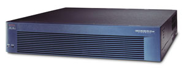

Алексей Лукацкий,
руководитель отдела Интернет-решений НИП "Информзащита"
luka@infosec.ru
В статье "Теория и практика выбора межсетевого экрана" ("BYTE/Россия" № 2'2004) мы привели рекомендации, как выбрать брандмауэр, соответствующий именно вашим требованиям к этому классу защитных средств. Однако описанный алгоритм имеет одно "граничное условие": в список рассматриваемых межсетевых экранов (МСЭ) придется включать лишь те, которые представлены на российском рынке. В данной статье мы кратко расскажем об особенностях этих МСЭ. Небольшое замечание: готовя материал, автор обратился практически ко всем игрокам этого рынка с просьбой ответить на вопросы, касающиеся цен, сертификации и других важных характеристик их продуктов. Поскольку не все производители (в частности, компании Symantec, Computer Associates и Rainbow) ответили на эти вопросы, при рассмотрении их решений использовалась только доступная информация.
Check Point Software
Решения израильской компании Check Point (http://www.firewall-1.ru), по сути, одного из мировых лидеров в области межсетевых экранов и средств построения VPN, появились на российском рынке в числе первых. Завоевав верхнюю строчку в мировом рейтинге средств сетевой безопасности, Check Point прочно обосновалась и на российском рынке МСЭ.
Флагман ее линейки - Firewall-1 Next Generation with Application Intelligence. Из рядовой системы защиты периметра этот продукт превратился в многофункциональный комплекс (рис. 1), который язык не поворачивается назвать обычным межсетевым экраном. В его состав по выбору пользователя может входить масса различных модулей: балансировки нагрузки, контроля пропускной способности, управления маршрутизаторами, обнаружения атак, построения VPN и т. п.
| Рис. 1. Интерфейс управления МСЭ Check Point Firewall-1 NG with Application Intelligence.
|
Помимо того, что МСЭ Firewall-1 поддерживает немалый набор собственных функциональных элементов, он допускает интегрирование с решениями более чем 350 производителей различных защитных средств - антивирусных пакетов и средств аутентификации, систем контроля содержимого и обнаружения атак и т. п.
Компания Check Point - одна из немногих, предлагающих решения для любых категорий заказчиков, включая домашние офисы и сети среднего размера, сети провайдеров (в том числе операторов GPRS) и системы центров данных. Можно назвать, в частности, такие продукты, как Provider-1 NG with Application Intelligence, Firewall-1 GX, VPN-1/Firewall-1 VSX NG with Application Intelligence, SecureXL (полный список доступен на сайте компании).
Конечно, учет требований столь разных категорий заказчиков был бы невозможен без поддержки различных аппаратных платформ: от обычных универсальных компьютеров Intel или Sun SPARC до специализированных сетевых устройств Safe@, Intrusion.com, Nokia, Crossbeam и т. д., функционирующих на гигабитных скоростях (http://www.checkpoint.com/products/choice/platforms/platforms_matrix.html). Здесь следует иметь в виду рекомендации поставщика касательно необходимого для работы МСЭ оборудования.
Помимо средств для защиты периметра сети Check Point предлагает решения для отдельных компьютеров - рабочих станций (VPN-1 SecuRemote и VPN-1 SecureClient) и серверов (VPN-1 SecureServer). Это так называемые персональные МСЭ, защищающие только один узел.
Cisco Systems
Cisco Systems (http://www.cisco.ru) - второй производитель, претендующий на звание мирового лидера в производстве межсетевых экранов (семейства PIX). И, надо сказать, не зря. Учитывая, что любой маршрутизатор Cisco (а по самым скромным оценкам, не менее 50% всего Интернета построено на базе оборудования именно этой компании) имеет возможность фильтрации трафика с помощью списков контроля доступа (access control list), т. е. выполняет функции пакетного фильтра, Cisco можно смело называть мировым лидером рынка сетевой безопасности.
Cisco, так же как и ее постоянный конкурент Check Point, предлагает решения различного уровня (табл. 1): от младших моделей (PIX 501 и PIX 506E) для защиты домашних сетей и небольших офисов до PIX 525 (рис. 2) и PIX 535, предназначенных для защиты центров данных и центральных офисов крупных компаний.
|  | Рис. 2. Программно-аппаратное решение Cisco PIX 525.
|
Таблица 1. Производительность межсетевых экранов компании Cisco
| Модель Pix | Производительность, Мбит/с | Маршрутизатор с IOS ASFS | Производительность, Мбит/с |
| 501 | 60 | SOHO 90 | 10 |
| 506E | 80 | 830 | 10 |
| 515E | 188 | 17xx | 20 |
| 525 | 330 | 26xxXM | 50 |
| 535 | 1600 | 2651XM | 55 |
| 2691 | 200 | ||
| 37xx | 200 |
В отличие от Check Point, компания Cisco изначально сконцентрировала свои усилия на программно-аппаратных системах защиты - это дает заказчикам возможность приобрести "автономное" решение и не задумываться, какой компьютер лучше использовать для установки программного МСЭ. Надо сказать, что сейчас по такому пути пошли очень многие производители: Internet Security Systems, Symantec, Nokia и т. д. Действительно, выгоднее приобрести у одного поставщика полностью готовый к работе комплекс сетевой безопасности, чем бегать по рынку в поисках совместимых программных и аппаратных решений. Более того, такое устройство готово к выполнению своих функций через 10-15 мин после того, как его вынули из коробки. Однако, как правило, российские потребители, желая сэкономить и забыв поговорку "скупой платит дважды", приобретают чисто программное решение.
У программно-аппаратного комплекса есть и другие плюсы: его проще поддерживать (и покупателю, и продавцу) и обновлять, для него нет проблем несовместимости, такое решение надежнее и, наконец, дешевле, как ни парадоксально это звучит. Ведь в случае приобретения программно-аппаратного комплекса не придется тратиться на мощный компьютер, лицензионную операционную систему и дополнительное оборудование (сетевые карты и т. п.) - все эти затраты уже включены в стоимость комплекса.
Немного особняком среди продуктов Cisco стоит Cisco IOS Advanced Security Feature Set. Это специальное ПО, встраиваемое в операционную систему маршрутизаторов IOS (начиная с версии 12.3) и реализующее множество защитных функций, которые отсутствуют в базовой конфигурации маршрутизатора, в том числе и функции МСЭ. И хотя этому решению по своим показателям далеко до PIX, оно обеспечивает минимально необходимый уровень безопасности периметра сети. Cisco IOS Advanced Security Feature Set поддерживается в целом ряде маршрутизаторов: Cisco 830, SOHO 90, 17xx, 26xxXM и 2691 и 3700 (см. табл. 1).
Следует обязательно упомянуть, что Cisco - единственный производитель, предлагающий специальные аппаратные платы Firewall Service Module (FWSM), интегрируемые в коммутаторы, что позволяет уйти от имиджа межсетевых экранов как средств защиты периметра. Применение такого решения для коммутаторов Catalyst позволяет организовать разграничение доступа и во внутренней сети. А одновременная установка в один коммутатор до четырех таких модулей обеспечивает МСЭ совокупную производительность до 20 Гбит/с (по 5 Гбит/с на каждый FWSM).
Но в части персональных МСЭ Cisco пока похвастаться нечем, хотя работы в этом направлении ведутся. В начале прошлого года Cisco приобрела компанию Okena - поставщика систем обнаружения и предотвращения атак на уровне конкретного узла, а совсем недавно, в ноябре 2003 г., объявила об альянсе с Symantec, Network Associates и Trend Micro в области защиты рабочих станций и серверов от вирусов, червей и других Интернет-угроз.
NetScreen
Молодая компания NetScreen (http://www.netscreen.com) возникла на сетевом небосклоне относительно недавно - в 1997 г. (а в России ее продукты появились только в начале прошлого года). Как и Cisco, NetScreen сконцентрировала свои усилия на программно-аппаратных решениях, выпустив на базе собственной защищенной операционной системы ScreenOS целое семейство МСЭ (табл. 2). В него входят средства обеспечения безопасности как для небольших и удаленных офисов (NetScreen-5XT и NetScreen-5GT), так и для операторов связи и крупных сетей (NetScreen-5400 и NetScreen-5200).
Таблица 2. Производительность межсетевых экранов компании NetScreen
| Модель NetScreen | Производительность, Мбит/с |
| 5400 | 12000 |
| 5200 | 4000 |
| 500 | 700 |
| 208 | 550 |
| 204 | 400 |
| 50 | 170 |
| 25 | 100 |
| 5GT | 75 |
| 5XT | 70 |
| 5XP | 20 |
Продукты, входящие в данную линейку (рис. 3), в целом стандартны и по своим функциям немногим отличаются от МСЭ двух предыдущих производителей. Однако NetScreen выделилась среди других поставщиков, выпустив систему защиты для GPRS-сетей - NetScreen-500 GPRS. Помимо нее, подобные средства предлагает только компания Check Point (Firewall-1 GX).
| Рис. 3. Межсетевые экраны NetScreen моделей 5400 и 5XP.
|
Не забывая и о безопасности внутренней сети, NetScreen создала персональный межсетевой экран NetScreen-Remote, который (как и аналогичный продукт Check Point) существует в двух вариантах: с функциями VPN-клиента или с функциями защиты компьютера (пакетный фильтр, защита от DoS-атак, контроль приложений и т. п.). Эти возможности поддерживаются модулями NetScreen-Remote VPN Client и NetScreen-Remote Security Client соответственно (у Check Point это VPN-1 SecuRemote и VPN-1 SecureClient соответственно).
Важное отличие решений NetScreen от продуктов конкурентов - простая схема лицензирования. Начиная с модели NetScreen-25, не нужно подсчитывать, сколько пользователей, параллельных соединений или VPN-туннелей будет обрабатывать средство защиты периметра, - достаточно знать желаемую пропускную способность. Исходя из этого параметра, можно выбрать нужную модель МСЭ и количество приобретаемых устройств.
WatchGuard
Компания WatchGuard, представленная в России своим партнером - фирмой Rainbow Technologies (http://www.firebox.ru), выпускает межсетевые экраны WatchGuard Firebox System и Firebox Vclass - элегантные устройства вызывающе красного цвета (рис. 4). Эти программно-аппаратные комплексы (производительность их приведена в табл. 3) хорошо известны в нашей стране. Как и другие западные поставщики, WatchGuard предлагает широкий спектр моделей - начиная от ориентированных на удаленные офисы (семейство Firebox System) и заканчивая устройствами для сетей среднего размера и центров данных (семейство Firebox Vclass).
| Рис. 4. Межсетевые экраны WatchGuard Firebox v10 и v80.
|
Таблица 3. Производительность межсетевых экранов компании WatchGuard
| Модель Firebox | Производительность, Мбит/с |
| V200 | 2000 |
| V100 | 600 |
| V80 | 200 |
| V60 | 200 |
| V60L | 100 |
| V10 | 75 |
| 4500 | 200 |
| 2500 | 200 |
| 1000 | 200 |
| 700 | 150 |
| 500 | 75 |
| SOHO 6tc и SOHO 6tc Wireless | 75 |
| SOHO 6 и SOHO 6 Wireless | 75 |
Интересно, что WatchGuard пошла по пути NetScreen, представив на рынок новое семейство Firebox Vclass на базе специализированного высокоскоростного ASIC-процессора, разработанного специально для выполнения защитных функций. Кроме того, следуя современным веяниям, WatchGuard выпустила специальные версии двух своих моделей Firebox SOHO 6tc Wireless и Firebox SOHO 6 Wireless, предназначенные для защиты беспроводных сетей стандарта 802.11b.
Заметим, что WatchGuard - в отличие от Check Point, которая предлагает расширяющий функционал (дополнительные модули) для своего флагманского продукта Firewall-1 NG with Application Intelligence "за отдельные деньги", - включила функции построения VPN, балансировки нагрузки, контроля пропускной способности, обеспечения высокой доступности и т. п. в стандартную поставку Firebox Vclass, не требуя дополнительной оплаты. Вбирая все лучшее от разных производителей, WatchGuard также дополнила свой продукт модулем проверки непротиворечивости правил фильтрации, что позволяет своевременно обнаружить ошибки, сделанные в процессе настройки МСЭ. Помимо этого, в комплект поставки входит базовая лицензия на антивирусное ПО McAfee VirusScan ASaP, позволяющее защититься от вирусов, червей и других Интернет-угроз.
"Инфосистемы Джет"
"Инфосистемы Джет" (http://www.jetinfosoft.ru) - российская компания, разработавшая собственную линейку средств защиты сети, в том числе межсетевые экраны Z-2 и "Ангара". Оба МСЭ представляют собой программные решения, но фирма поставляет и готовые программно-аппаратные комплексы, построенные на базе ОС Solaris компании Sun (архитектуры Intel и SPARC).
Межсетевой экран Z-2 "исповедует" базовые принципы вышеописанных средств защиты. В него, помимо стандартного для МСЭ функционала (фильтрация пакетов, анализ протоколов, регистрация событий и т. п.), встроена бесплатная система обнаружения атак Snort, существенно расширяющая возможности МСЭ. Не обошлось и без интеграции с внешними решениями, например, с антивирусом компании Symantec или средством построения VPN "Тропа" собственной разработки. Одно из достоинств данного продукта - простая схема лицензирования: не нужно платить за дополнительные модули (как, например, в решениях Check Point), но зато придется указать количество защищаемых IP-адресов (что отличает эту схему лицензирования от принятой NetScreen).
Отметим, что, выпустив Z-2, "Инфосистемы Джет" провела его сертификацию в Государственной технической комиссии России на соответствие ее руководящим документам (РД). И здесь компания добилась значительных успехов - она не только сертифицировала МСЭ Z-2 по 2-му классу для межсетевых экранов (по РД), но и стала пионером в области сертификации своих продуктов по введенным с 1 января нынешнего года "Общим критериям".
Межсетевой экран "Ангара" (http://xtalk.msk.su/Angara) - самое "свежее" предложение компании: он появился на рынке в конце прошлого года и специально ориентирован на небольшие (до 250 узлов) сети и удаленные офисы, где нет квалифицированного персонала. Продукт выполнен на базе Z-2, но с несколько усеченной функциональностью (достаточной, впрочем, для обеспечения необходимого уровня защиты сети).
"Элвис+"
Еще одна российская компания, "Элвис+" (http://www.zastava.ru), выпустила на рынок семейство "Застава", в которое, кроме средств построения VPN и анализа защищенности информационных ресурсов, входит и одноименный межсетевой экран. Продукт может функционировать на обычном компьютере под управлением ОС Sun Solaris. Напомним, что "Застава" стала одним из первых МСЭ, появившихся на российском рынке, - это произошло еще в 1997 г. Кстати, "Элвис+", как и "Инфосистемы Джет", принимала участие в разработке РД Гостехкомиссии "Средства вычислительной техники. Межсетевые экраны. Защита от несанкционированного доступа к информации. Показатели защищенности от несанкционированного доступа к информации".
Отсутствие в комплексе "Застава" встроенных модулей, расширяющих его функциональность, компенсируется возможностью управления межсетевыми экранами Cisco (включая PIX и Cisco IOS ASFS) и Check Point (при наличии у клиента подсистемы "Застава-Центр управления").
Другие производители
Выше мы охарактеризовали продукты нескольких серьезных игроков российского рынка межсетевых экранов, однако этим их перечень не ограничивается. Из зарубежных компаний можно назвать и Symantec (Symantec Enterprise Firewall), и Computer Associates (eTrust Firewall), и Lucent (Lucent Firewall), и 3Com, и D-Link. А из отечественных - НИП "Информзащита" (http://www.infosec.ru), "Элко" (http://www.elco.ru), "Амикон" (http://www.amicon.ru) и ряд других.
Достаточно интересные аппаратные МСЭ для небольших компаний предлагают компании D-Link (http://www.dlink.ru/products/protection.html) и 3Com (http://www.3com.ru/products/servers.html), известные своими сетевыми решениями. Эти небольшие устройства выполняют сразу множество функций: трансляцию адресов, маршрутизацию трафика, его фильтрацию, блокировку URL и т. п.
Продукты компаний НИП "Информзащита", "Амикон" и ряда других изначально создавались как средства построения VPN. Но в процессе разработки в них был включен мощный пакетный фильтр, который достаточно неплохо справляется со своими задачами. Однако повторимся: эти продукты в первую очередь предназначены для построения VPN и только затем - для межсетевого экранирования. Следует особо отметить решение компании "Информзащита", так как именно ее продукт - "Континент-К" стал первым после реорганизации ФАПСИ, получившим сертификат ФСБ.
Существенное отличие практически всех отечественных разработок - отсутствие поддержки различных медиа-протоколов, в том числе протоколов IP-телефонии (H.323, SIP и MGCP) и видеоконференций (RSTP и т. д.), которые становятся все более популярны в российских компаниях.
Кстати, при выборе МСЭ стоит обратить внимание на такую функцию, как фильтрация протоколов. Многие производители указывают, что их продукты могут быть настроены для фильтрации любых протоколов. По сути это обман, хотя и не всегда явный. Под фильтрацией многие производители понимают возможность задавать соответствующие правила обработки заголовков пакетов, которые контролирует МСЭ. Именно здесь и кроется тонкость. Зачастую важная информация, необходимая для реальной фильтрации, находится не в заголовке пакета, а внутри него. Например, информация об адресах абонентов для SIP-протокола, применяемого в IP-телефонии, размещена именно в теле данных. Неумение межсетевого экрана "вникать в суть" может привести к невозможности обмена голосовыми данными через данный МСЭ или к "открытию" в нем слишком большой дыры, которой могут воспользоваться злоумышленники.
Еще одно отличие российских МСЭ - не очень высокая пропускная способность. Только компания "Инфосистемы Джет" заявляет производительность Z-2 до 1 Гбит/с, остальные выступают намного скромнее (табл. 4).
Таблица 4. Производительность некоторых МСЭ российских производителей
| Продукт, компания | Производительность, Мбит/с |
| Z-2, "Инфосистемы Джет" | До 1000 |
| "Континент-К", НИП "Информзащита" | До 100 |
| ФПСУ-IP, "Амикон" | До 90 |
| "Эльф", "Элко" | До 75 |
| "Застава", "Элвис+" | До 70 |
Еще один серьезный недостаток российских разработок - отсутствие нормального обучения правилам эксплуатации МСЭ. В лучшем случае компания-производитель время от времени проводит такое обучение на своей территории. Существует лишь специализированный учебный центр НИП "Информзащита", на базе которого проходит обучение работе с системой "Континент-К".
Немного о сертификации
Практически все описанные выше МСЭ сертифицированы в России по 3-му классу, согласно упомянутым выше РД Гостехкомиссии России. Особняком стоит Z-2 от "Инфосистемы Джет" - этот продукт не только сертифицирован по 2-му классу (а сейчас ведутся работы по достижению 1-го), но и имеет сертификат соответствия "Общим критериям" по уровню ОУД4+. Сертификат отсутствует только у решений "Элко", WatchGuard, а также NetScreen (в последнем случае это объясняется недавним выходом компании на российский рынок).
Учитывая, что в нашей стране принят новый стандарт безопасности ГОСТ/ИСО МЭК 15408-2002 "Общие критерии оценки безопасности информационных технологий" и соответственно Государственная техническая комиссия России переходит на "Общие критерии", а также тот факт, что многие упомянутые зарубежные средства защиты имеют сертификат на соответствие "Общим критериям" по уровню EAL4 (ОУД4) (http://niap.nist.gov/cc-scheme/ValidatedProducts.html), можно в скором будущем надеяться на признание таких сертификатов и в нашей стране. В этом случае западным компаниям не потребуется вновь сертифицировать свои продукты в РФ - достаточно будет международного сертификата.